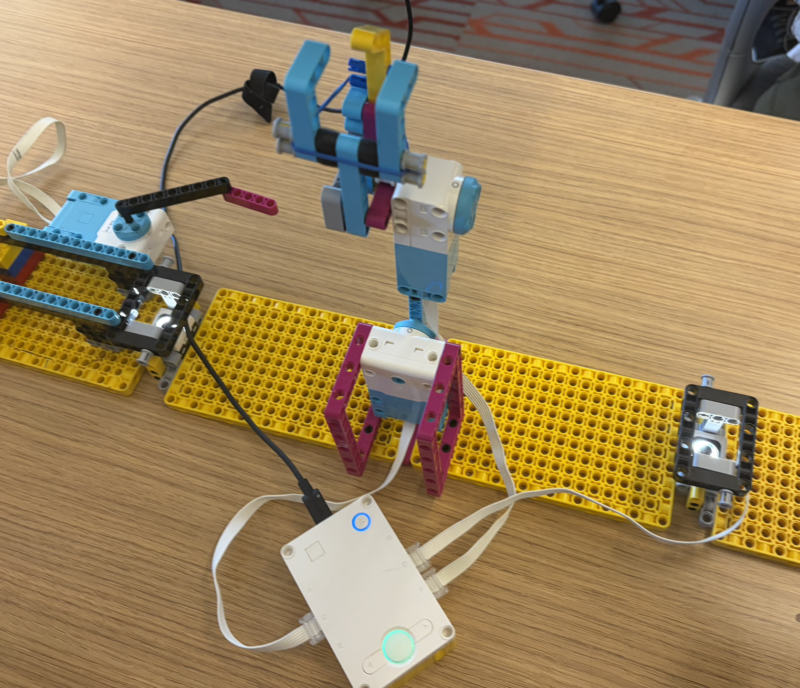
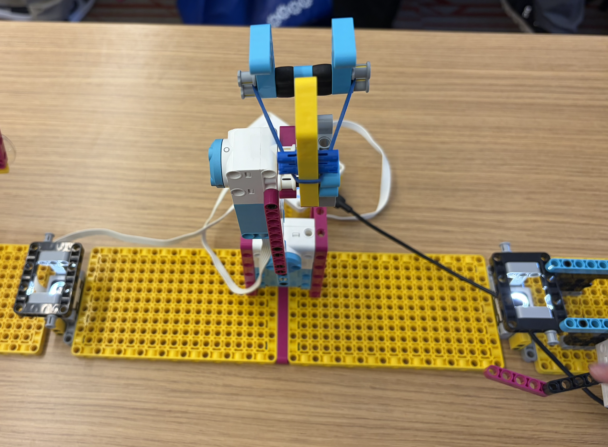

For this project, the original design that I wanted to use was a more complex claw that would pick up the ping pong ball, move the arm itself up, and the rotate the base before reversing the process to drop the ball. Unfortunately, this design did not work for me, so I resorted to a more simplified approach. I used a claw that opened and closed using a pivot mechanism, and then rotated around until it hit the other basket, where it would release the ping pong ball. The rubber band placed on the claw helps to not have the claw open as far as it could, otherwise it would be unable to repeat the motion over multiple trials, which was the goal. The design does work without the rubber band, but it needs it to repeat the motion more than once.